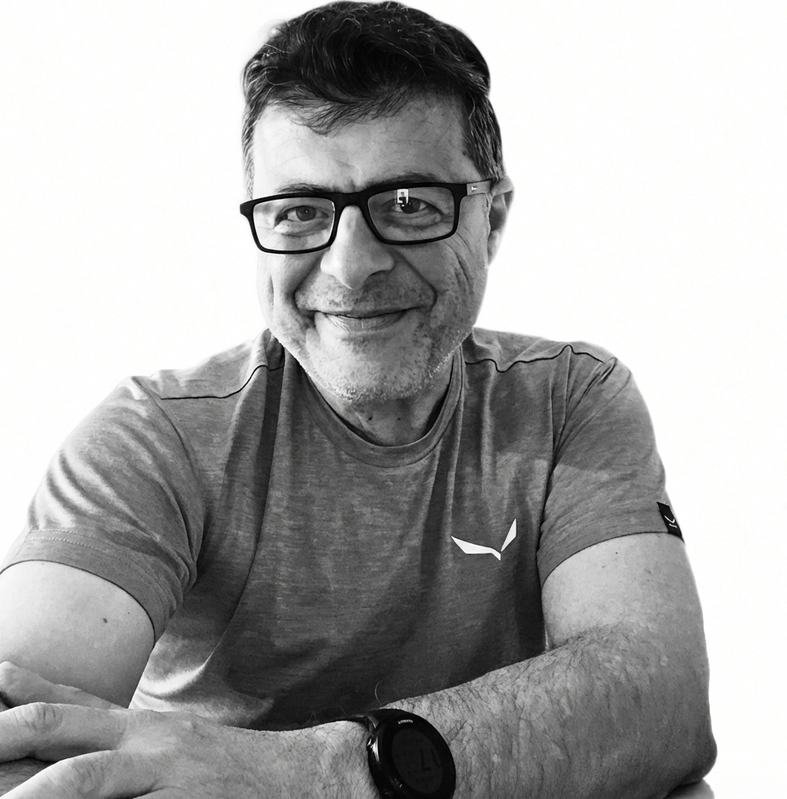
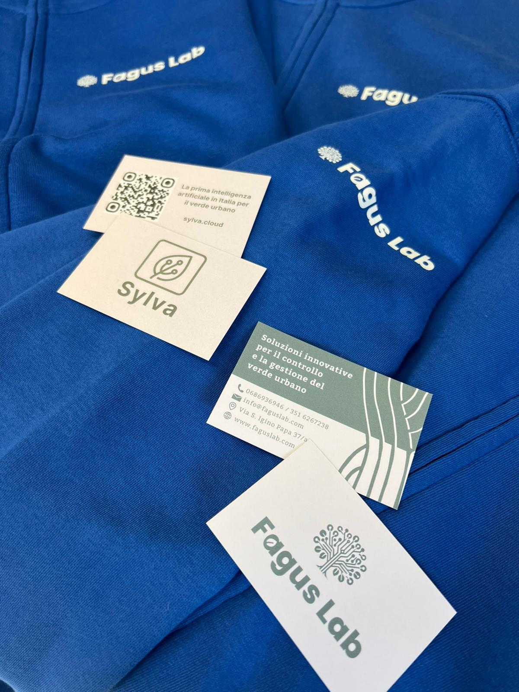
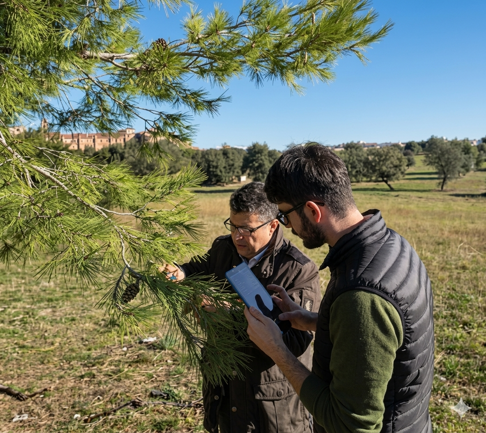
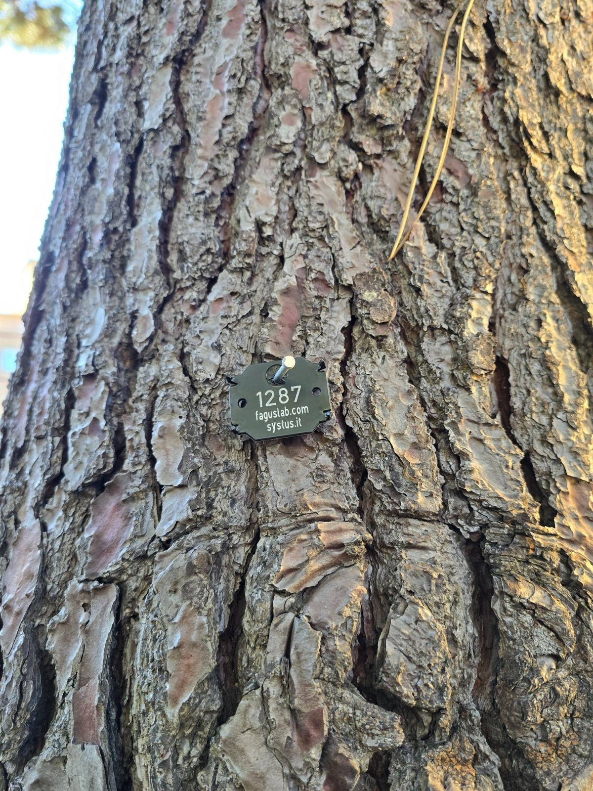
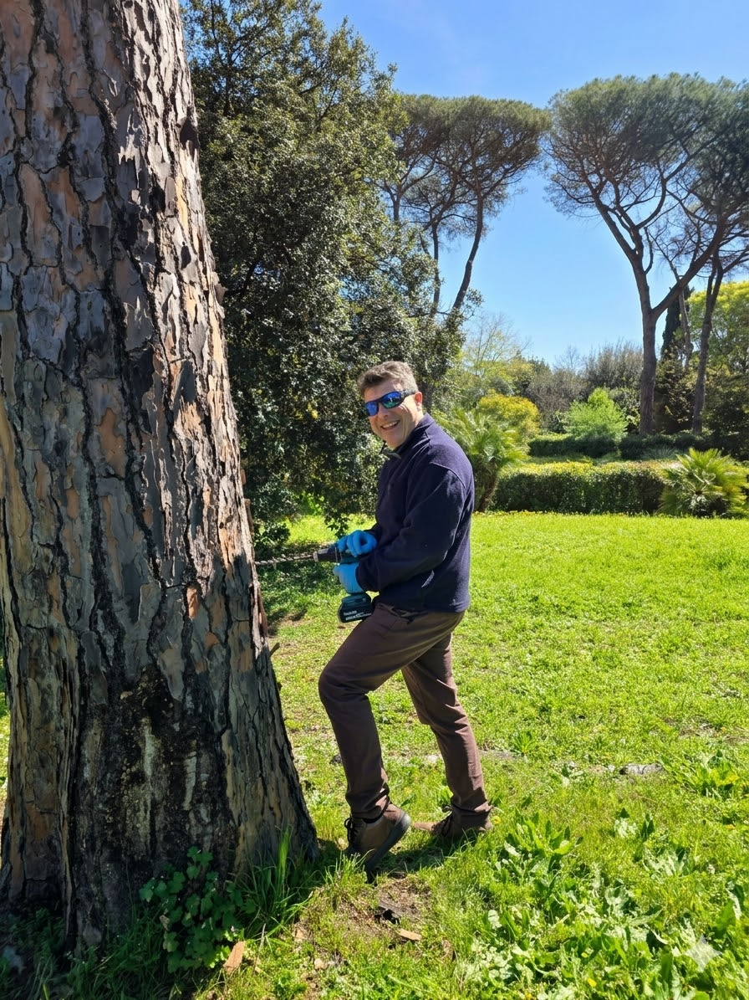
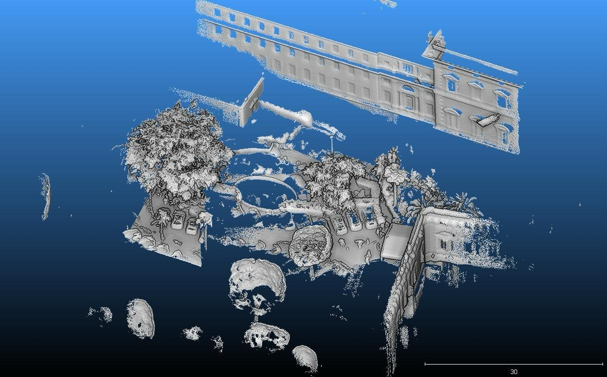
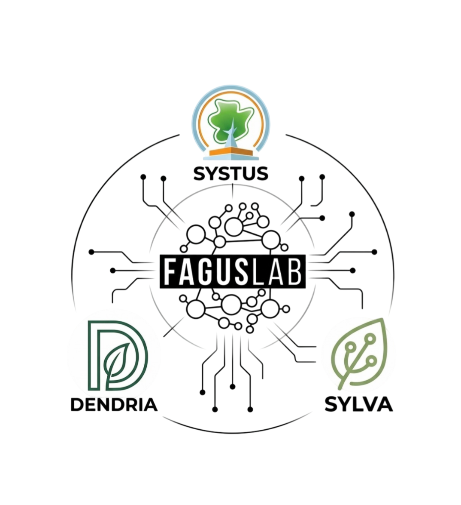

Trent'anni di arboricoltura urbana. Tre piattaforme digitali per il verde. Una visione: la natura e la tecnologia parlano la stessa lingua.

"La natura non ha bisogno di essere spiegata. Ha bisogno di essere ascoltata. La tecnologia ci dà nuove orecchie per farlo."
Fondata a Roma nel 1994, Fagus Lab è lo studio di consulenza arboricola costruito in trent'anni di pratica sul campo. Rigore scientifico, visione tecnologica — ogni incarico è un caso unico.






La piattaforma professionale per il censimento degli alberi secondo i criteri CAM. Archivio, schede tecniche e reportistica per enti pubblici e privati.
Visita il sito Dal 2024 · AI · GratuitoAssistente AI per l'arboricoltura basato su dataset certificati. Aggiornato su normative, leggi e best practice. Libero e gratuito per sempre.
Visita il sito In arrivo · MonitoraggioAlert meteo, calcolo del valore ornamentale (metodo svizzero) e servizi ecosistemici i-Tree. 2° posto Milano Triennale 2024 — Software per il paesaggio.
Scopri di piùUn memoir professionale che attraversa trent'anni di arboricoltura italiana: le radici di un mestiere, le intuizioni che hanno cambiato il modo di lavorare, le persone che contano.
Non un manuale. Non un saggio tecnico. Una storia — con tutto il peso e la leggerezza che le storie sanno portare.
Per consulenze professionali, collaborazioni istituzionali o semplicemente per un confronto tra chi ama le piante e chi ama le idee.